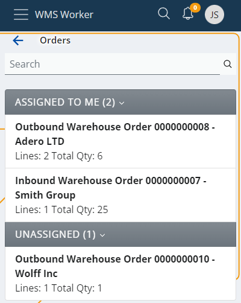
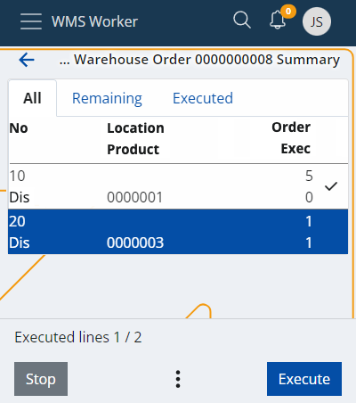
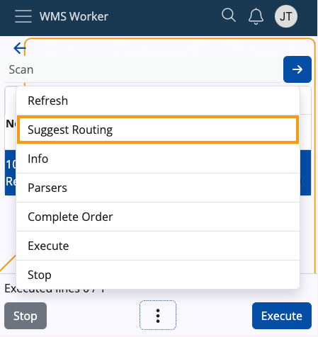
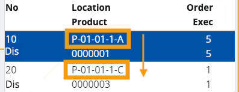
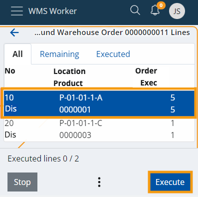
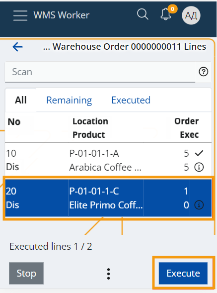
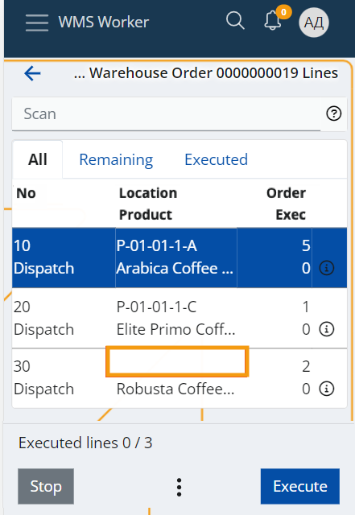

Suggest Routing
Workers who physically pick items for warehouse orders utilize picking routes to efficiently navigate the process. Such routes are calculated using the Suggest Routing UI function, accessible in the Orders menu of the WMS worker.
Parameters to consider
A picking route considers various parameters configured for the warehouse, including:
Zones: These are designated as picking zones through the "Zone Type" policy.
To properly use the function, ensure that "TaskType == Dispatch" and "ZoneType = picking".
Location Addresses: These addresses are essential for calculating the optimal route through the warehouse.
For each address, ensure that "ZoneType == Picking".
Availability: The system suggests locations with enough availability to execute the respective order lines.
However, this can be disabled in favor of a more custom setting, where locations are suggested as strings based on their Address or the user-defined value specified in the CustomRouting policy.
In all cases, only locations with availability greater than zero are suggested.
Lot Expiry Date: This ensures that items nearing expiration are prioritized.
Note
The Suggest Routing function can only be utilized for dispatch warehouse orders, specifically those whose lines consist solely of "Dispatch" or "Comp-dispatch" task types.
Policy
The Suggest Routing function follows a specific RoutingAlgorithm policy through which it calculates how to suggest locations.
This policy allows users to define their own routes for collecting warehouse products. It achieves this by assuming the Code of a location as its primary value. Therefore, the policy can have one of two values applied:
Fixed - Suggested locations are ordered by the strings of their addresses or by priority values specified in the CustomRouting policy. Availability of the locations is not taken into account, except that it must be greater than zero.
Smart - Suggested locations are ordered by the strings of their addresses or by priority values specified in the CustomRouting policy. Locations must have enough availability to fulfill the specific line in order to be suggested.
In case no policy is defined, the default Smart behaviour is applied.
Upon identifying whether the policy is Fixed or Smart, the Suggest Routing function is able to return the appropriate location(s).
Note
If a Fixed RoutingAlgorithm policy is applied, it will come into effect in the WMS Worker and the warehouse order definition, as they both can utilize the Suggest Routing function.
Using the function
Start by opening the Orders menu of WMS Worker.
This takes you to the list of orders that are available for execution for the current worker.

Click on the outbound order you would like to execute.
This will open a screen containing the lines of the order and their details.

At the bottom of the screen, you will find a three-dot button, from which you can access the Suggest Routing function.
This will start the processing of the lines and the calculation of the function.

When the processing is done, the function will load all Locations that were successfully determined in the Location column. This will form the route that you need to follow sequentially to collect all products from the order.
The lines will be automatically sorted by the location address or user-defined values specified in the CustomRouting policy. If defined, the RoutingAlgorithm policy will determine whether locations with enough availability or any availability greater than zero are shown.

To begin following the route, click the Execute button.
This will lead you to the first screen which contains information about the suggested Location.

When you reach the Location, scan it and perform the rest of the line execution as usual.
Once the execution of the first line is finished, the system will bring you back to the lines menu.
The next line will be automatically selected and available for execution, thus leading you to the next Location of the route.

Incomplete suggestions
Order lines for which the function could not find a suitable Location to suggest will be sorted last - after all lines with successfully suggested locations.

This way, when you finish following the suggested route, you can still execute the remaining lines without suggestions.
The system will not guide you to a particular location. However, the Location screen during the line execution will contain convenient panels like Availability, which you can use to find a location from where you can still pick the product.